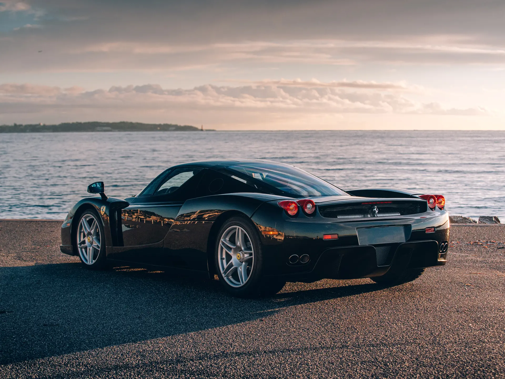
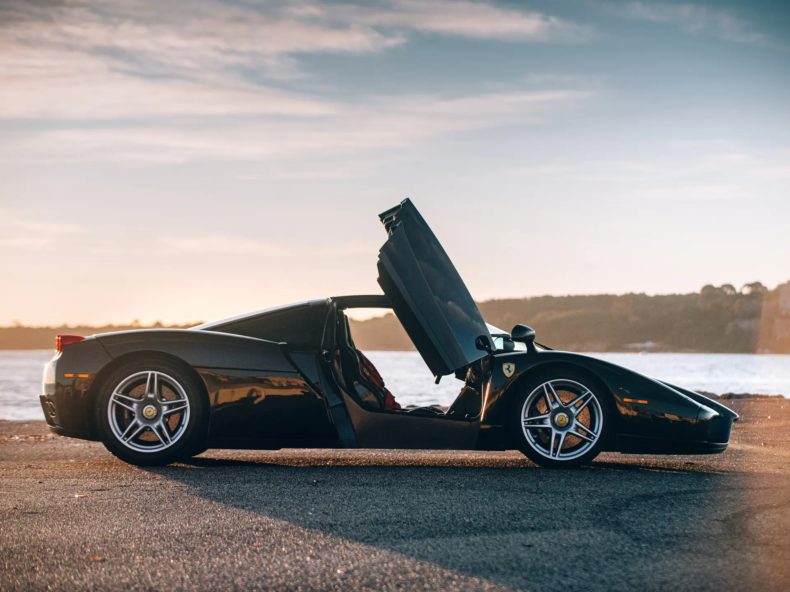

The Ferrari Enzo marked a decisive shift in Ferrari’s philosophy, bringing Formula 1-derived technology into a road car with a level of precision and control that set new standards for the time. Introduced in 2002, it combined a carbon fibre monocoque chassis with advanced aerodynamics and a naturally aspirated 6.0-litre V12 producing over 650 horsepower.
What truly set the Enzo apart was how it managed that performance. Unlike many of its contemporaries, the car integrated sophisticated traction control and stability systems that allowed drivers to access its full capability with confidence. These electronic aids worked in harmony with the chassis and suspension, delivering a level of stability and predictability that was rare in early 2000s supercars.

The Enzo also featured an electrohydraulic transmission derived from Ferrari’s Formula 1 program, enabling rapid gear changes, along with carbon-ceramic brakes that significantly improved stopping performance. Altogether, it was a car defined not just by power, but by control, a machine that translated racing technology into usable performance.
More than a flagship, the Enzo established the foundation for Ferrari’s modern hypercars, marking the point where advanced electronics, aerodynamics, and materials became central to the brand’s identity.
| Engine | 6.0L Naturally Aspirated V12 |
| Power | 650bhp |
| Weight | 1480kg |
| Transmission | 6-speed Automated Manual |
| 0-62 | 3.1 s |
| Top Speed | 220mph |
| Year | 2002 |